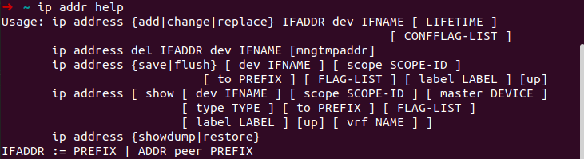
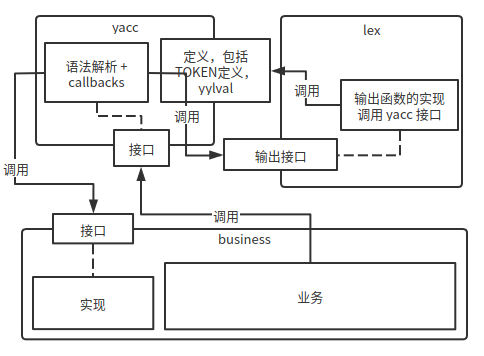
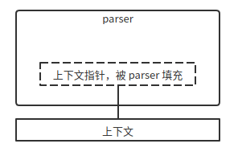

由于看不惯一个项目的解析模块, 在 nftables 的启示下, 我就把这模块用 yacc 和 lex 重写了

lex 根据 .l 生成 lex.yy.c （名字可以定制）, 用于 tokenize 字符串
以 ip address add 为例
ip RETURN IP
address RETURN ADDRESS
将这三个词切割开来, 返回给接下来的 yacc 代码使用, yacc 和 lex 两者之间的关系又和 gcc 的编译习惯有关

这里面的调用关系太复杂了, 所以需要整理出一套模板.
在 yacc 里面声明 TOKEN, 之后 bison 会生成 TOKEN 的 C 头文件声明, 同时定义语法规则, 规则匹配之后调用 business(如上图所示)代码. 规则的写法很简单, 从一个根节点开始, 构建一颗抽象树, AST. 对命令行解析来说, AST 树很简单, 动作, key-value, flag 等, 结构相对扁平. 写 yacc 的关键步骤：
boilerplate, 后面会给出
用 %union 定义 yylval
用 %token 标记树的叶子, 也即 TERMINATOR
%token<类型> 标记 terminator
%type<类型> 标记 non-terminator
yacc 默认使用全局变量来传递数据, 但也有 reentrant parser 形式. 以可重入的形式存在时, yylval 定义在 yyparse()函数里面.
int
yyparse (struct x_ctx* ctx, void * scanner, struct x_state * state)
{
[...]
YY_INITIAL_VALUE (static YYSTYPE yyval_default;)
// 声明 yylval
YYSTYPE yylval YY_INITIAL_VALUE (= yyval_default);
[...]
}
yyparser 的需要格外定义
// 生成的函数以 x_ 开头
// 如：
// #define yyparse x_parse
// #define yylex x_lex
// #define yyerror x_error
// #define yydebug x_debug
// #define yynerrs x_nerrs
%name-prefix "x_"
%define api.pure full
// 指定 lex 的变量名字
%lex-param { scanner }
// 第一个参数, 用来封装业务代码的上下文
%parse-param { struct x_ctx* ctx }
// lexer
%parse-param { void * scanner }
// 解析状态
%parse-param { struct x_state * state }
%locations
%debug
难点是业务代码的 struct x_str, 影响代码的设计. 我的做法是将在语法规则匹配之后, 填充 struct x_str 对象 ctx 的信息, 最后 ctx 回到业务模块的时候就包含了所有参数信息.

这里的上下文其实就是 C 语言的类对象.
其他的, scanner, x_state 其实都是无关要紧的东西, 用来提高写代码的体验, 提示哪一行解析错误等.
以解析以下命令为例
ip address add 192.168.1.0/24 dev eth0
结果：
➜ ./r address add 192.168.42.254/32 dev enp9s0
address: 192.168.42.254/32
interface: enp9s0
operation: add
➜ ./r addr del 192.168.42.254/32 dev enp9s0
address: 192.168.42.254/32
interface: enp9s0
operation: del